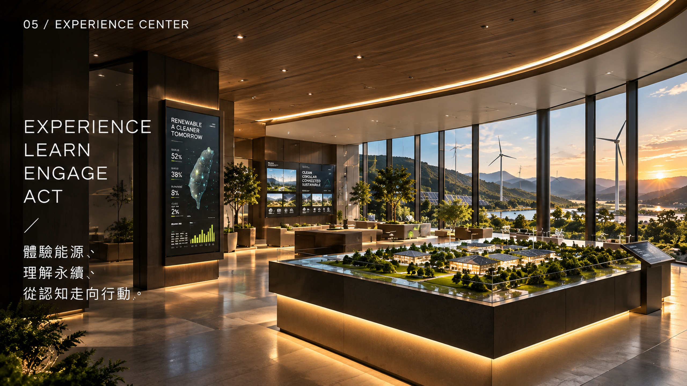

SOLAR PV · 12 MWp
[CE-DEMO-S01] 東嶺光電示範方案East Ridge Solar Concept

東嶺示範基地坐落於高日照丘陵坡地，採用階梯式耐衝刷鋼構支架，搭載 650W+ 雙面高效單晶矽光伏模組。設計重點在於驗證高坡度地貌之接地防雷工程、逆變器分散配置，以及地面漫射光帶來的額外雙面發電增益。 Designed for terraced hillside conditions, featuring anti-erosion mounting structures and 650W+ bifacial monocrystalline modules to evaluate terrain-following aerodynamics and ground albedo gain.
Capacity Specification
12 MWp (STC Peak DC)
Primary Dispatch Role
日間綠電主力基底Daytime Solar Base
Audited Generation
N/A (Concept Model)
Commercial Return
N/A (No ROI Guarantee)
ENGINEERING UNCERTAINTY
高坡度山陵微氣候雲遮效應、雨季泥沙淤積對下部支架基礎之長期沖刷風險（無實測監測數據）。
Microclimatic cloud cover variation and stormwater runoff erosion along steep slopes.